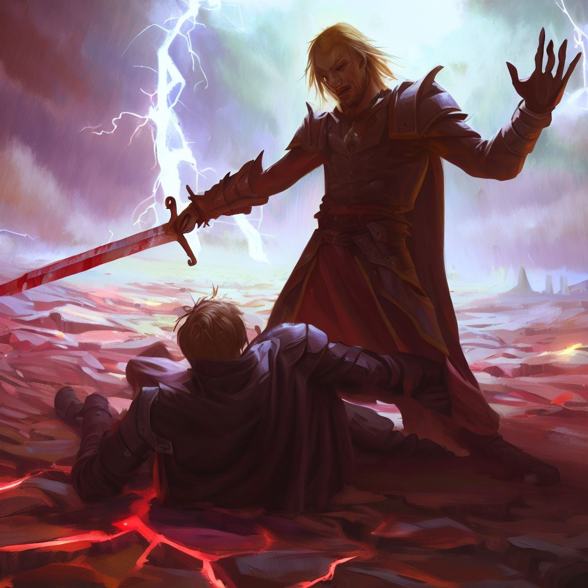

TERRITORY.IO テリトリオ
エルリックと仲間たちは陣取りゲームに挑んだが、途中で裏切り者が現れ、魔法の陣を乗っ取る者たちも増えた。絶え間ない戦闘と tra沢もの試練により、仲間たちは疲弊し、最終的に敗北を喫した。 大陸は陣地の取り合いから生まれた混乱により、大混乱に陥り、エルリックと彼の仲間たちは孤独に散り散りになった。物語は悲劇的なバッドエンドを迎え、ヴァリアンティア大陸は闇に包まれたままとなった。
バッドエンド！！
